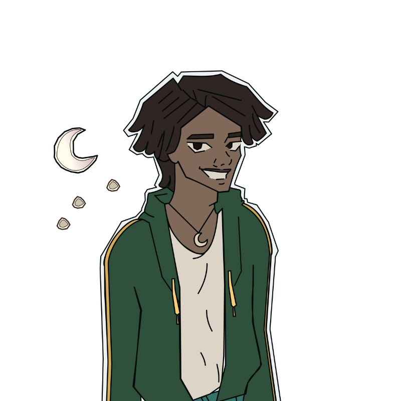
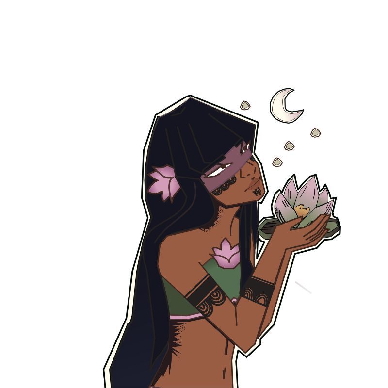
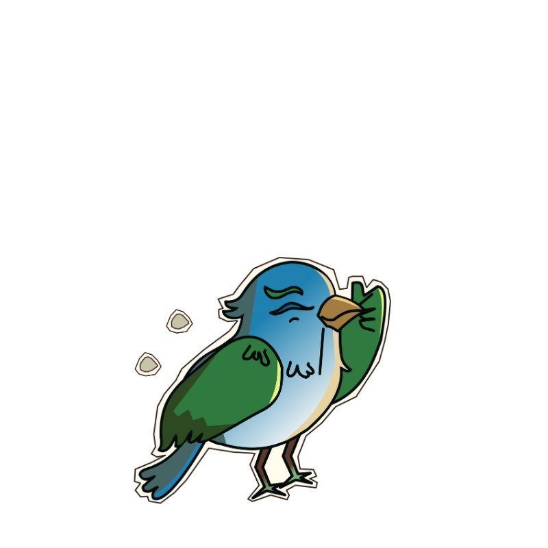
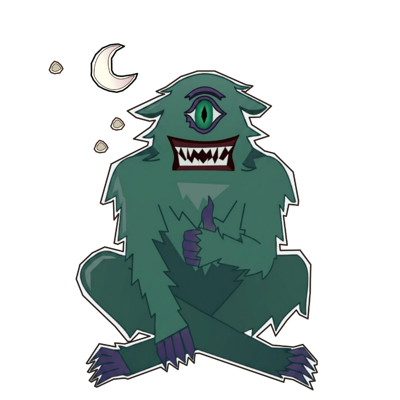
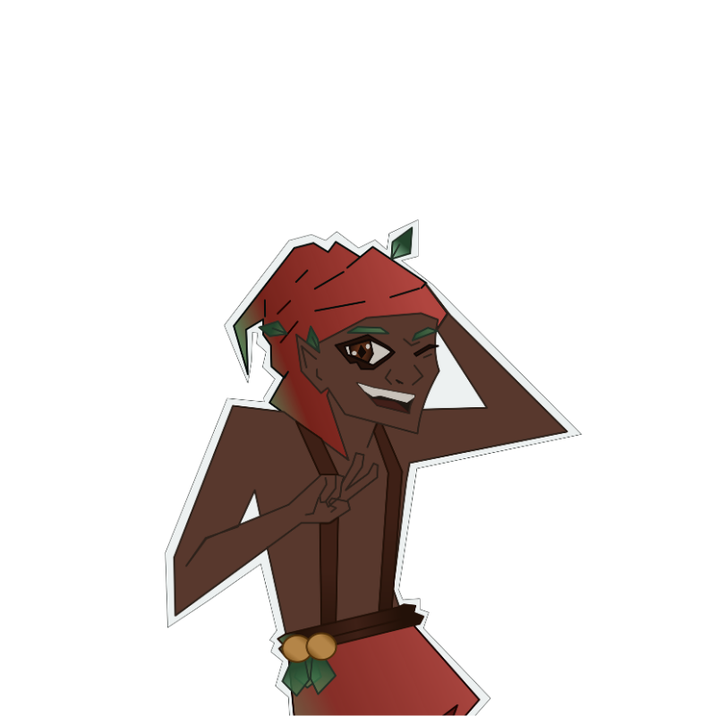
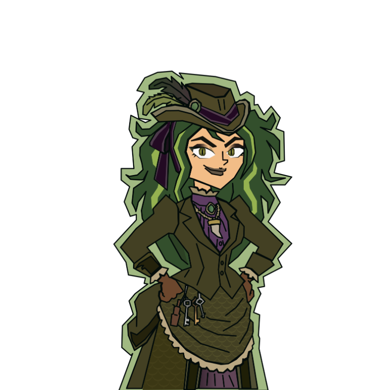

Conheça os personagens
Conheça os guardiões, espíritos e criaturas que dão vida ao universo OpyLendas.

Jaciel
Fechado no seu próprio mundinho. Ele pode até viver com a cabeça na lua, mas quando o grupo precisa, a sua gentileza é tanta que ele não descansa até colocar os pés de todo o mundo no chão!

Naiá
Uma menina doce que não foge de uma boa briga. Ela é tão teimosa e cabeça de pedra que, quando cismam de irritar os amigos dela, até a água do rio fica quente!

Saíra-7-Cores
Fofo, carismático e leal até ao fim. O Saíra é o coração do grupo e a melhor proteção que terá, pronto para dar asas à amizade e não deixar ninguém cair!

Mapinguari
De poucas palavras e cara de poucos amigos. Ele não é de conversar, mas quando a floresta corre perigo, em vez de papo, ele coloca o olho no trombone!

Saci Pererê
Engraçado, dramático e 100% indisciplinado. O Saci vive para o caos e odeia receber ordens, mas quando a coisa fica séria, a sua audácia e agilidade resolvem qualquer problema num soprar de olhos.

Cuca
Debochada, ardilosa e ranzinza até dizer chega. Quando ela acorda com as escamas viradas, não há magia no mundo que salve quem atravessar o caminho dela!